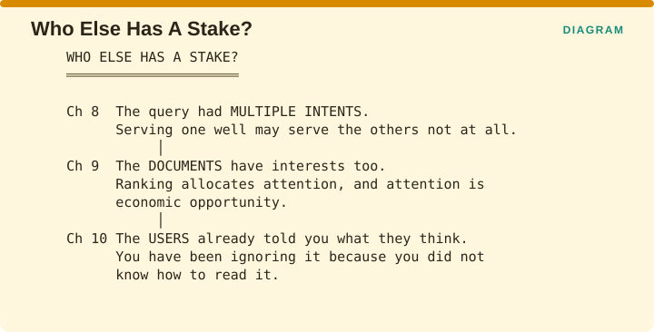
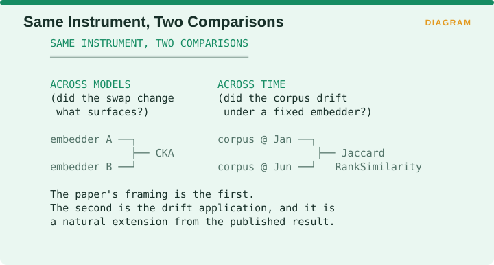
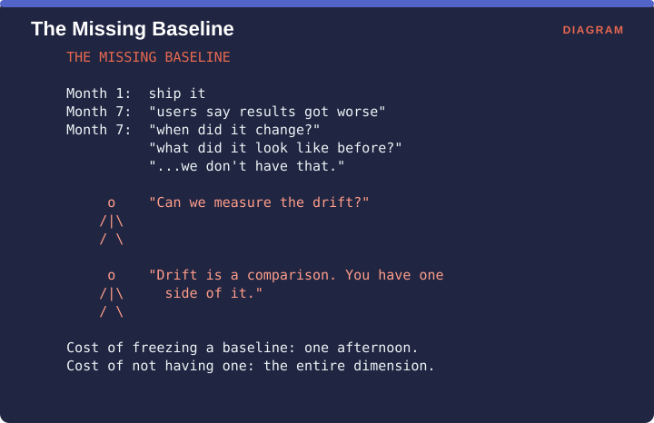
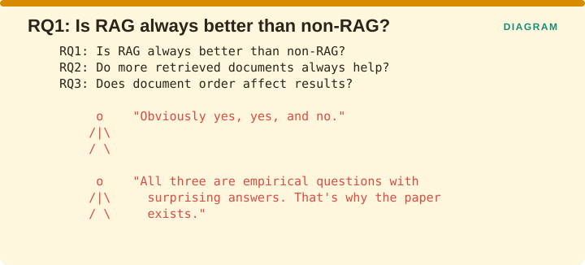

Measuring Retrieval › Appendix C: Figure Archive
Appendix C: Figure Archive
A few figures never found a home in a chapter, either because they opened a section that was merged during assembly or because the point they illustrate is now made in the prose. They are collected here rather than discarded, since several of them are useful on their own.
Figure F029: Ch 5 Rank matters. Here is how to weight it

Figure F062: Who Else Has A Stake?

Figure F119: Same Instrument, Two Comparisons

Figure F120: The Missing Baseline

Figure F122: RQ1: Is RAG always better than non-RAG?

Measuring Retrieval · Madhava Gaikwad · First edition, September 2026